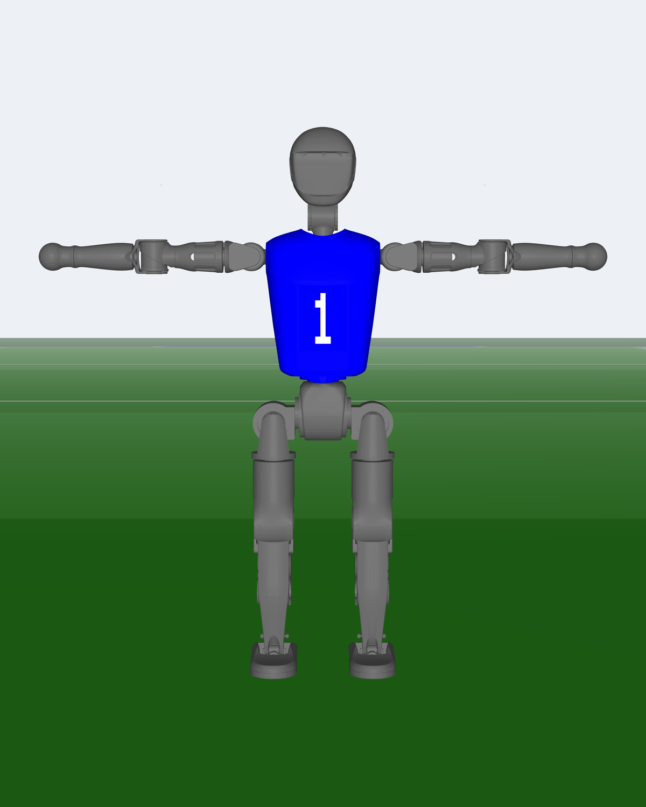
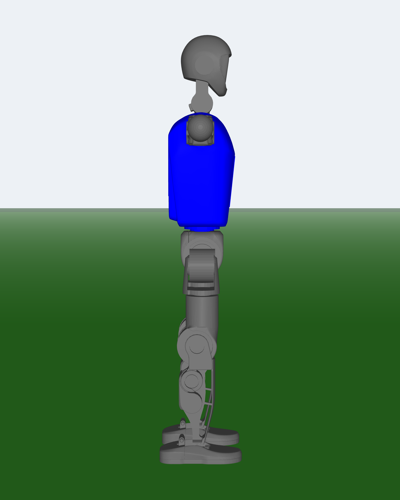
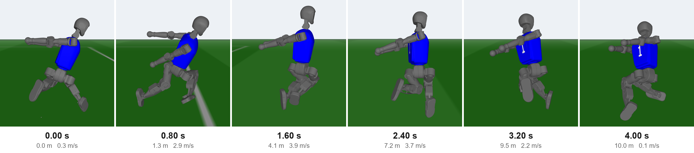
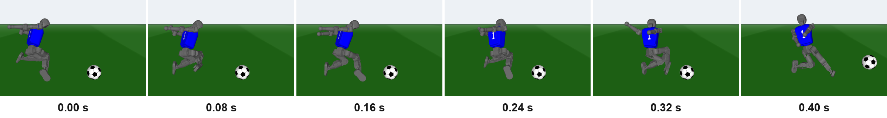
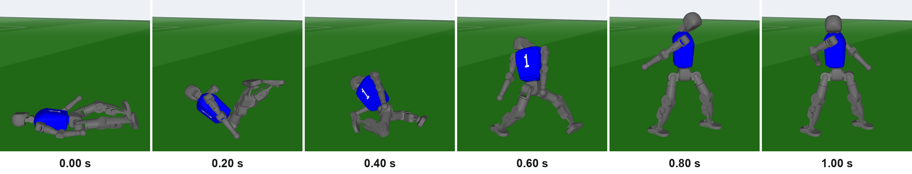
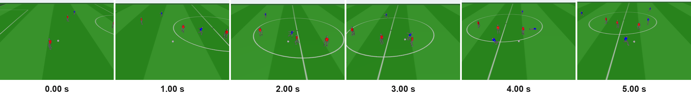

RoboCup 3D is a football league where every player is a simulated robot. In 2026 the league moved to a new simulator built on MuJoCo, with the Booster T1 humanoid and 7 players a side. Skills written for the old simulator do not carry over, so we built ours from zero.
This page goes bottom to top. First the three skill policies we trained with reinforcement learning: move, kick, get up. Then the orchestrator that tells each robot which skill to run and where to go. We built two: a rule-based one, and an RL one that learns small corrections on top of it. Then a live view of a real half, and the matches.
Every 20 ms our program sends the simulator one target angle per motor. The simulator's PD controller then pushes each joint toward its target, working out the torque again every 5 ms. So a policy never outputs torque. It outputs where each joint should go next.
θ* = standing + 0.5·aget-up: θ* = θ + 0.6·a, clipped to rangeτ = kp(θ* − θ) − kd·θ̇capped at the joint's torque limit

| Joint | Motor | Range | Torque cap N·m | Standing pose | kp / kd, move and kick | kp / kd, get-up |
|---|---|---|---|---|---|---|
| Head yaw | he1 | -90° to +90° | 7 | +0° | fixed: yaw 0, pitch 40° | 7 / 0.32 |
| Head pitch | he2 | -20° to +70° | 7 | +0° | fixed: yaw 0, pitch 40° | 7 / 0.32 |
| L shoulder pitch | lae1 | -190° to +70° | 18 | +0° | 25 / 0.6 | 18 / 0.51 |
| L shoulder roll | lae2 | -100° to +90° | 18 | -80° | 25 / 0.6 | 18 / 0.51 |
| L elbow pitch | lae3 | -130° to +130° | 18 | +0° | 25 / 0.6 | 18 / 0.51 |
| L elbow yaw | lae4 | -140° to +0° | 18 | -23° | 25 / 0.6 | 18 / 0.51 |
| R shoulder pitch | rae1 | -190° to +70° | 18 | +0° | 25 / 0.6 | 18 / 0.51 |
| R shoulder roll | rae2 | -90° to +100° | 18 | +80° | 25 / 0.6 | 18 / 0.51 |
| R elbow pitch | rae3 | -130° to +130° | 18 | +0° | 25 / 0.6 | 18 / 0.51 |
| R elbow yaw | rae4 | +0° to +140° | 18 | +23° | 25 / 0.6 | 18 / 0.51 |
| Waist | te1 | -90° to +90° | 30 | +0° | 25 / 0.6 | 30 / 0.66 |
| L hip pitch | lle1 | -103° to +90° | 45 | -23° | 25 / 0.6 | 45 / 0.80 |
| L hip roll | lle2 | -11° to +90° | 30 | +0° | 25 / 0.6 | 30 / 0.66 |
| L hip yaw | lle3 | -57° to +57° | 30 | +0° | 25 / 0.6 | 30 / 0.66 |
| L knee | lle4 | +0° to +134° | 60 | +46° | 25 / 0.6 | 60 / 0.93 |
| L ankle pitch | lle5 | -50° to +20° | 20 | -23° | 25 / 0.6 | 20 / 0.54 |
| L ankle roll | lle6 | -25° to +25° | 15 | +0° | 25 / 0.6 | 15 / 0.46 |
| R hip pitch | rle1 | -103° to +90° | 45 | -23° | 25 / 0.6 | 45 / 0.80 |
| R hip roll | rle2 | -90° to +11° | 30 | +0° | 25 / 0.6 | 30 / 0.66 |
| R hip yaw | rle3 | -57° to +57° | 30 | +0° | 25 / 0.6 | 30 / 0.66 |
| R knee | rle4 | +0° to +134° | 60 | +46° | 25 / 0.6 | 60 / 0.93 |
| R ankle pitch | rle5 | -50° to +20° | 20 | -23° | 25 / 0.6 | 20 / 0.54 |
| R ankle roll | rle6 | -25° to +25° | 15 | +0° | 25 / 0.6 | 15 / 0.46 |
All three skills train the same way. 8,192 copies of the robot run at once on one GPU, using the league's own robot model. Every step each robot gets a reward, and PPO shifts the network toward whatever earned more. One iteration is 8,192 robots × 128 steps, about a million steps.
| Policy | Inputs | Outputs | Parameters | Learning rate | Epochs | Minibatch | γ | GAE λ | Clip |
|---|---|---|---|---|---|---|---|---|---|
| Movement | 83 | 21 | 326,058 | 1e-4 | 10 | 32,768 | 0.99 | 0.7 | 0.1 |
| Kick | 89 | 21 | 327,594 | 1e-4 | 10 | 32,768 | 0.99 | 0.7 | 0.1 |
| Get-up | 76 | 23 | 324,526 | 1e-4 | 10 | 32,768 | 0.99 | 0.95 | 0.1 |
Walks and runs. It takes a 3-number command (forward speed, sideways speed, turn rate) and moves to match it. It also stands the robot still when the command is zero.

| Episode | Share | Command |
|---|---|---|
| A to B | 45 % | go 4 to 35 m, then stand still 0.3 to 2 s |
| Sprint | 30 % | flat out for 2 to 12 s |
| Fast run | 10 % | 2 to 7 m/s for 2 to 8 s |
| Any direction | 15 % | new command every 1 to 4 s |
| Term | Weight |
|---|---|
| getting closer to the A to B target | +4.0 /s |
| stopped on the target | +3.0 /s |
| standing still when told to | +3.0 /s |
| matching the commanded velocity | +2.0 /s |
| speed along the command | +2.0 /s |
| forward speed in sprints | +2.0 /s |
| matching the commanded turn rate | +1.5 /s |
| hands outside the allowed box | −1.0 /s |
| foot slipping | −0.8 /s |
| torque, power, jerk (added later) | −0.01 to −0.1 |
Stands at A, runs to B flat out and stops. Arrived in 3.18 s, top speed 3.57 m/s, overshoot 0.19 m, then held still 2 s.
Stands at A, runs to B flat out and stops. Arrived in 3.96 s, top speed 4.15 m/s, overshoot 0.00 m, then held still 2 s.
Stands at A, runs to B flat out and stops. Arrived in 6.80 s, top speed 4.17 m/s, overshoot 0.15 m, then held still 2 s.
Stands at A, runs to B flat out and stops. Arrived in 12.02 s, top speed 4.23 m/s, overshoot 0.16 m, then held still 2 s.
Stands at A, runs to B flat out and stops. Arrived in 4.40 s, top speed 4.12 m/s, overshoot 0.10 m, then held still 2 s.
Stands at A, runs to B flat out and stops. Arrived in 5.08 s, top speed 4.14 m/s, overshoot 0.23 m, then held still 2 s.
Stands at A, runs to B flat out and stops. Arrived in 6.20 s, top speed 4.09 m/s, overshoot 0.26 m, then held still 2 s.
Asked 0.50 m/s forward. Got 0.59 forward, 0.09 left, turning 0.17.
Asked 1.00 m/s forward. Got 1.17 forward, 0.12 left, turning 0.28.
Asked 2.00 m/s forward. Got 2.21 forward, 0.02 left, turning 0.23.
Asked 3.00 m/s forward. Got 3.09 forward, −0.23 left, turning 0.14.
Asked 4.00 m/s forward. Got 3.65 forward, −0.39 left, turning 0.11.
Asked 5.00 m/s forward. Got 3.84 forward, −0.33 left, turning −0.36.
Asked 6.00 m/s forward. Got 3.49 forward, 0.08 left, turning −0.74.
Asked 0.50 m/s backward. Got −0.61 forward, −0.03 left, turning 0.02.
Asked 1.00 m/s backward. Got −1.08 forward, −0.01 left, turning 0.04.
Asked 1.50 m/s backward. Got −1.51 forward, 0.03 left, turning 0.08.
Asked 2.00 m/s backward. Got −1.90 forward, 0.05 left, turning 0.11.
Asked 0.50 m/s to the left. Got −0.13 forward, 0.51 left, turning 0.01.
Asked 1.00 m/s to the left. Got −0.10 forward, 0.98 left, turning 0.02.
Asked 1.50 m/s to the left. Got −0.00 forward, 1.38 left, turning 0.04.
Asked 1.00 m/s to the right. Got 0.07 forward, −1.06 left, turning 0.01.
Asked 1.00 m/s forward and 0.50 m/s to the left. Got 1.25 forward, 0.58 left, turning 0.20.
Asked 1.00 m/s forward and 0.50 m/s to the right. Got 1.22 forward, −0.40 left, turning 0.13.
Asked 0.50 m/s backward and 0.50 m/s to the left. Got −0.60 forward, 0.46 left, turning 0.07.
Asked 2.00 m/s forward and 1.00 m/s to the left. Got 2.23 forward, 0.77 left, turning 0.28.
Asked turning 1.00 rad/s left. Got −0.01 forward, 0.01 left, turning 1.03.
Asked turning 2.00 rad/s left. Got −0.07 forward, 0.02 left, turning 2.08.
Asked turning 3.00 rad/s left. Got −0.06 forward, 0.05 left, turning 3.10.
Asked turning 2.00 rad/s right. Got 0.01 forward, 0.00 left, turning −1.87.
Asked 1.50 m/s forward and turning 1.00 rad/s left. Got 1.62 forward, 0.01 left, turning 1.23.
Asked 1.50 m/s forward and turning 1.00 rad/s right. Got 1.82 forward, −0.14 left, turning −0.92.
Flat out from standing, finished in 3.20 s, 0.03 m off the line.
Flat out from standing, finished in 14.86 s, 0.04 m off the line.
Running at 3 m/s, then told to change heading.
Running at 3 m/s, then told to change heading.
Flat out for 3 s, then told to stop at 3.9 m/s. Stopped within 1.76 m.
Pushed while standing still.
Pushed while standing still.
Pushed while walking at 1 m/s.
Pushed while standing still.
Pushed while standing still.
Pushed while walking at 1 m/s.
Pushed while standing still.
Pushed while standing still.
Pushed while walking at 1 m/s.
Walks up to a still ball and kicks it as hard as it can along an aim direction the orchestrator gives it.

| Setting | Value |
|---|---|
| ball | still, 0.3 to 1.5 m away, within ±45° |
| aim | within ±45° of where it faces |
| power | always full |
| camera | from the head, ±60° view |
| ends | fall, 8 s, or 2 s after the ball stops |
| Term | Weight |
|---|---|
| ball speed along the aim (2° window) | +10 /s |
| ball speed sideways off the aim | −40 /s |
| standing still after the kick | +3 /s |
| getting closer before the touch | +2 /s |
| hands outside the allowed box | −1 /s |
| foot slipping | −0.8 /s |
| time before the touch | −0.2 /s |
| torque, power, jerk (added later) | −0.01 to −0.1 |
Ball 13.1 m/s, launched 3.7° off the aim at the goal centre.
Ball 11.1 m/s, launched 1.3° off the aim at the goal centre.
Ball 12.0 m/s, launched 4.6° off the aim at the goal centre.
Ball 8.0 m/s, launched 4.2° off the aim at the goal centre.
Ball 11.2 m/s, launched 4.3° off the aim at the goal centre.
Ball 10.8 m/s, launched 3.6° off the aim at the goal centre.
Ball 11.8 m/s, launched 4.5° off the aim at the goal centre.
Ball 10.9 m/s, launched 3.3° off the aim at the goal centre.
Ball 10.8 m/s, launched 0.8° off the aim at the goal centre.
Ball 10.2 m/s, launched 0.3° off the aim at the goal centre.
Ball 11.2 m/s, launched 0.8° off the aim at the goal centre.
Ball 11.4 m/s, launched 3.1° off the aim at the goal centre.
Ball 12.1 m/s, launched 1.3° off the aim at the goal centre.
Ball 11.6 m/s, launched 4.1° off the aim at the goal centre.
Ball 11.4 m/s, launched 2.7° off the aim at the goal centre.
Ball 11.0 m/s, launched 3.1° off the aim at the goal centre. The posts are 3.9° either side of the aim from here.
Ball 12.2 m/s, launched 5.5° off the aim at the goal centre. The posts are 3.9° either side of the aim from here.
Ball 11.3 m/s, launched 2.2° off the aim at the goal centre. The posts are 3.9° either side of the aim from here.
Ball 12.0 m/s, launched 4.6° off the aim at the goal centre.
Ball 9.0 m/s, launched 3.8° off the aim at the goal centre.
Ball 11.1 m/s, launched 3.7° off the aim at the goal centre.
Ball 10.8 m/s, launched 3.7° off the aim at the goal centre.
Ball 11.3 m/s, launched 4.4° off the aim at the goal centre.
Ball 12.4 m/s, launched 3.8° off the aim at the goal centre.
Ball 10.4 m/s, launched 2.3° off the aim at the goal centre.
Ball 11.9 m/s, launched 2.3° off the aim at the goal centre.
Ball 11.0 m/s, launched 4.3° off the aim at the goal centre.
Ball 10.5 m/s, launched 2.2° off the aim at the goal centre.
Ball 10.6 m/s, launched 3.9° off the aim at the goal centre.
Ball 11.5 m/s, launched 3.4° off the aim at the goal centre.
Ball 11.7 m/s, 3.3° off the aim, rolled 29 m. The holding stance's toe touched the ball 0.02 s after it was placed, before the kick network acted.
Ball 12.6 m/s, 6.7° off the aim, rolled 28 m. The holding stance's toe touched the ball 0.02 s after it was placed, before the kick network acted.
Ball 14.3 m/s, 3.5° off the aim, rolled 30 m. The holding stance's toe touched the ball 0.02 s after it was placed, before the kick network acted.
Ball 10.4 m/s, 1.5° off the aim, rolled 25 m.
Ball 12.2 m/s, 0.5° off the aim, rolled 28 m.
Ball 10.8 m/s, 3.3° off the aim, rolled 26 m.
Ball 9.3 m/s, 2.0° off the aim, rolled 25 m.
Ball 10.7 m/s, 0.6° off the aim, rolled 26 m.
Ball 8.1 m/s, 1.0° off the aim, rolled 24 m.
Ball 8.7 m/s, 3.7° off the aim, rolled 23 m.
Ball 12.1 m/s, 0.7° off the aim, rolled 30 m.
Ball 11.4 m/s, 2.1° off the aim, rolled 28 m.
Ball 13.2 m/s, 1.7° off the aim, rolled 31 m.
Ball 8.9 m/s, 1.1° off the aim, rolled 25 m.
Ball 11.9 m/s, 3.8° off the aim, rolled 28 m.
Ball 11.1 m/s, 0.6° off the aim, rolled 28 m.
Ball 11.4 m/s, 2.6° off the aim, rolled 30 m.
Ball 11.3 m/s, 1.9° off the aim, rolled 28 m.
Ball 11.0 m/s, 1.6° off the aim, rolled 27 m.
Ball 11.4 m/s, 0.1° off the aim, rolled 29 m.
Ball 13.0 m/s, 4.4° off the aim, rolled 30 m.
Ball 13.4 m/s, 2.3° off the aim, rolled 29 m.
Ball 11.2 m/s, 0.2° off the aim, rolled 29 m.
Ball 13.3 m/s, 4.2° off the aim, rolled 29 m.
Ball 11.2 m/s, 1.4° off the aim, rolled 26 m.
Ball 12.5 m/s, 0.9° off the aim, rolled 30 m.
Ball 12.5 m/s, 3.3° off the aim, rolled 29 m.
Gets the robot from any fallen pose back to standing, then hands control back to movement.

| Setting | Value |
|---|---|
| start | one of 41,088 fallen poses recorded in the league server |
| mix | back 28 %, front 28 %, sides 7 % each, mid-fall 30 % |
| done when | feet down, torso at standing height, tilt under 10°, held still 0.5 s |
| ends | done, or 8 s |
| training wheels | a lift on the torso, up to 60 % of body weight, faded to 0 |
| Term | Weight |
|---|---|
| every second not yet standing | −5 to −1 /s |
| standing held 0.5 s | +5 once |
| jerky actions | −0.001 |
| joint torque | −0.002 |
Get-up network stood it up in 1.38 s. The test then hands back to the movement network and walks 1 m/s for 6 s, to check the hand-off (5.9 m, no fall).
Get-up network stood it up in 1.52 s. The test then hands back to the movement network and walks 1 m/s for 6 s, to check the hand-off (5.9 m, no fall).
Get-up network stood it up in 1.34 s. The test then hands back to the movement network and walks 1 m/s for 6 s, to check the hand-off (5.9 m, no fall).
Get-up network stood it up in 1.84 s. The test then hands back to the movement network and walks 1 m/s for 6 s, to check the hand-off (5.9 m, no fall).
Get-up network stood it up in 1.62 s. The test then hands back to the movement network and walks 1 m/s for 6 s, to check the hand-off (5.8 m, no fall).
Get-up network stood it up in 1.72 s. The test then hands back to the movement network and walks 1 m/s for 6 s, to check the hand-off (5.8 m, no fall).
Get-up network stood it up in 1.86 s. The test then hands back to the movement network and walks 1 m/s for 6 s, to check the hand-off (6.1 m, no fall).
Get-up network stood it up in 1.56 s. The test then hands back to the movement network and walks 1 m/s for 6 s, to check the hand-off (5.8 m, no fall).
Get-up network stood it up in 1.94 s. The test then hands back to the movement network and walks 1 m/s for 6 s, to check the hand-off (6.1 m, no fall).
Get-up network stood it up in 2.74 s. The test then hands back to the movement network and walks 1 m/s for 6 s, to check the hand-off (5.9 m, no fall).
Never went down, so the get-up network was not needed. The movement network carried on.
Never went down, so the get-up network was not needed. The movement network carried on.
Get-up network stood it up in 1.92 s. The test then hands back to the movement network and walks 1 m/s for 6 s, to check the hand-off (5.7 m, no fall).
Never went down, so the get-up network was not needed. The movement network carried on.
Get-up network stood it up in 2.50 s. The test then hands back to the movement network and walks 1 m/s for 6 s, to check the hand-off (5.9 m, no fall).
Get-up network stood it up in 1.64 s. The test then hands back to the movement network and walks 1 m/s for 6 s, to check the hand-off (5.8 m, no fall).
Get-up network stood it up in 1.78 s. The test then hands back to the movement network and walks 1 m/s for 6 s, to check the hand-off (6.0 m, no fall).
Never went down, so the get-up network was not needed. The movement network carried on.
Get-up network stood it up in 2.24 s. The test then hands back to the movement network and walks 1 m/s for 6 s, to check the hand-off (5.6 m, no fall).
Never went down, so the get-up network was not needed. The movement network carried on.
Never went down, so the get-up network was not needed. The movement network carried on.
Get-up network stood it up in 2.28 s. The test then hands back to the movement network and walks 1 m/s for 6 s, to check the hand-off (6.0 m, no fall).
Get-up network stood it up in 2.14 s. The test then hands back to the movement network and walks 1 m/s for 6 s, to check the hand-off (7.0 m, no fall).
Never went down, so the get-up network was not needed. The movement network carried on.
Get-up network stood it up in 2.36 s. The test then hands back to the movement network and walks 1 m/s for 6 s, to check the hand-off (7.0 m, no fall).
Never went down, so the get-up network was not needed. The movement network carried on.
Never went down, so the get-up network was not needed. The movement network carried on.
Get-up network stood it up in 2.00 s. The test then hands back to the movement network and walks 1 m/s for 6 s, to check the hand-off (6.0 m, no fall).
Get-up network stood it up in 1.56 s. The test then hands back to the movement network and walks 1 m/s for 6 s, to check the hand-off (6.0 m, no fall).
Get-up network stood it up in 1.66 s. The test then hands back to the movement network and walks 1 m/s for 6 s, to check the hand-off (6.0 m, no fall).
Get-up network stood it up in 1.76 s. The test then hands back to the movement network and walks 1 m/s for 6 s, to check the hand-off (6.0 m, no fall).
Get-up network stood it up in 1.64 s. The test then hands back to the movement network and walks 1 m/s for 6 s, to check the hand-off (6.1 m, no fall).
Get-up network stood it up in 1.36 s. The test then hands back to the movement network and walks 1 m/s for 6 s, to check the hand-off (3.8 m, no fall).
Get-up network stood it up in 2.06 s. The test then hands back to the movement network and walks 1 m/s for 6 s, to check the hand-off (6.2 m, no fall).
Get-up network stood it up in 1.90 s. The test then hands back to the movement network and walks 1 m/s for 6 s, to check the hand-off (4.1 m, no fall).
Before the full team, the three policies had to hand over to each other cleanly. Here one robot gets knocked over, gets up, walks to the ball and scores. The timeline under each clip says which policy is running.
This is what turns three skills into a team. It never moves a joint. Each cycle, on each robot, it answers two questions: which policy runs now, and what command does it get. The robots coordinate only through the 10-byte messages the league lets them send each other.
| Role | When | Target point |
|---|---|---|
| Wait | before kick-off and after a goal | stand still (robots are placed on their spots) |
| Kick-off | any kick-off | own kick-off spot. P7 takes ours |
| Away | their kick-in, corner, free kick | at least 6.5 m from the ball (inside 5.5 m the referee removes the robot) |
| Striker | lowest cost to reach the ball (auction below) | 0.8 m behind the ball on the aim line, then kick |
| Keeper | P1, otherwise | on the line from goal to ball, 1 m out |
| Support | everyone else | its formation spot (below) |
cost = d / 3 m/s + 0.5 · |heading error| + 1.5 (wrong side of the ball) + 3 (fallen)
d = distance to the kick spot
lowest cost becomes striker
current striker gets −0.7 so it does not flip
open play: goal centre, or 1 m away from a keeper in the goal mouth
kick-off, indirect free kick: deepest direction that stays in the field
speed = min(8, √(2 · 3 · (d − 0.125))) m/s
speed ≤ 1 m/s while the target is more than 30° off
turn rate = clamp(3 · bearing, ±2 rad/s)
within 1 m: side steps, no turning
| # | Position | x | y |
|---|---|---|---|
| 1 | keeper | goal-to-ball line, 1 m out | |y| ≤ 1.2 |
| 2 | left back | ball − 10, in −21 … 10 | 0.5·ball + 5, in −8 … 12 |
| 3 | right back | ball − 10, in −21 … 10 | 0.5·ball − 5, in −12 … 8 |
| 4 | holding mid | ball − 5, in −18 … 16 | 0.6·ball, in −10 … 10 |
| 5 | left forward | ball + 4, in −8 … 22 | 0.4·ball + 8, in −4 … 15 |
| 6 | right forward | ball + 4, in −8 … 22 | 0.4·ball − 8, in −15 … 4 |
| 7 | centre forward | ball + 8, in −2 … 23 | 0.3·ball, in −6 … 6 |
| Situation | What our robots do | Why |
|---|---|---|
| Before kick-off, after a goal | jump to fixed spots, P1 (−25.5, 0) to P7 (−6.5, 0) | the only time placing robots is allowed |
| Our kick-off | P7 kicks it wide, then sits out 8 s | a direct goal from kick-off does not count, a second touch is a foul |
| Their kick-off, kick-in, corner, free kick | everyone stays 6.5 m from the ball | inside 5.5 m the referee moves the robot off |
| Our goal area | only the keeper goes in | 3 robots there is a foul |
The RL orchestrator does not replace the rules. It sits on top. Every 0.2 s it looks at the game from one robot's point of view and outputs 3 numbers that nudge the rules. If it outputs zeros you get the rule-based team back. Roles, the keeper, set plays and get-ups stay hand-written, so it can never learn to break a rule.
| Output | Range | Used when the robot is | What it changes |
|---|---|---|---|
| spot shift forward | −1 to 1, × 8 m | support | moves its formation spot up or back |
| spot shift sideways | −1 to 1, × 8 m | support | moves its formation spot left or right |
| aim turn | −1 to 1, × 60° | striker | turns the rules' shooting aim |
| simulator | our own 2D match sim in JAX, on the GPU |
| speed | about 900 five-minute halves a second, one H100 |
| players | 14 robots and a ball, referee restarts included |
| robot numbers | 4.2 m/s top speed, 11.4 m/s kicks with 3° spread, 2.6 s down after a fall |
| goal scored | +1, whole team |
| goal conceded | −1, whole team |
| ball moving toward their goal | +0.1 × share of the half length |
| opponent | rule-based team 75 %, frozen copy of itself 25 % |
| Result | Value |
|---|---|
| 2D simulator, against the rule-based team | +1.3 goals per half (deployed version), +2.6 for a longer run |
| League server, against the rule-based team | 41-47 in goals over 13 matches, no clear gain yet |
A full half recorded in the league server. The tag over each of our robots shows which policy it is running at that moment. The sidebar shows all seven with their roles. Click a robot to see exactly what the RL orchestrator sees and outputs for it.
Full matches against other teams' released code for the new server. Each reel plays at 8× speed and slows to real speed 8 s before every goal.

| Opponent | Our orchestrator | Half 1 | Half 2 | Final |
|---|---|---|---|---|
| magmaOffenburg (2025 runner-up) | rule-based | 2-0 | 9-0 | 11-0 |
| FC Portugal (2025 champion), 2 of 7 dropped out | rule-based | 3-0 | 6-0 | 9-0 |
| FC Portugal (2025 champion), 2 of 7 dropped out | rule-based + RL | 5-0 | 5-0 | 10-0 |
| Apollo | rule-based | 11-0 | 10-0 | 21-0 |
| BahiaRT | rule-based | 6-0 | 7-0 | 13-0 |
Rule-based orchestrator.
Rule-based orchestrator.
Rule-based + RL orchestrator.
Rule-based orchestrator, real-time server.
Rule-based orchestrator.
The two orchestrators head to head.
| Problem | Measured | Next |
|---|---|---|
| RL orchestrator gain in the real server | 41-47 over 13 matches against the rule-based team | more matches, and the 2D simulator's gaps to real physics |
| Shuffling in place | about 10 foot lifts a second while standing | a still stance when idle (built, being tested), retrain with foot-timing rewards |
| Falls | 32 to 48 per match across 7 robots | better contact handling, less crowding near the ball |